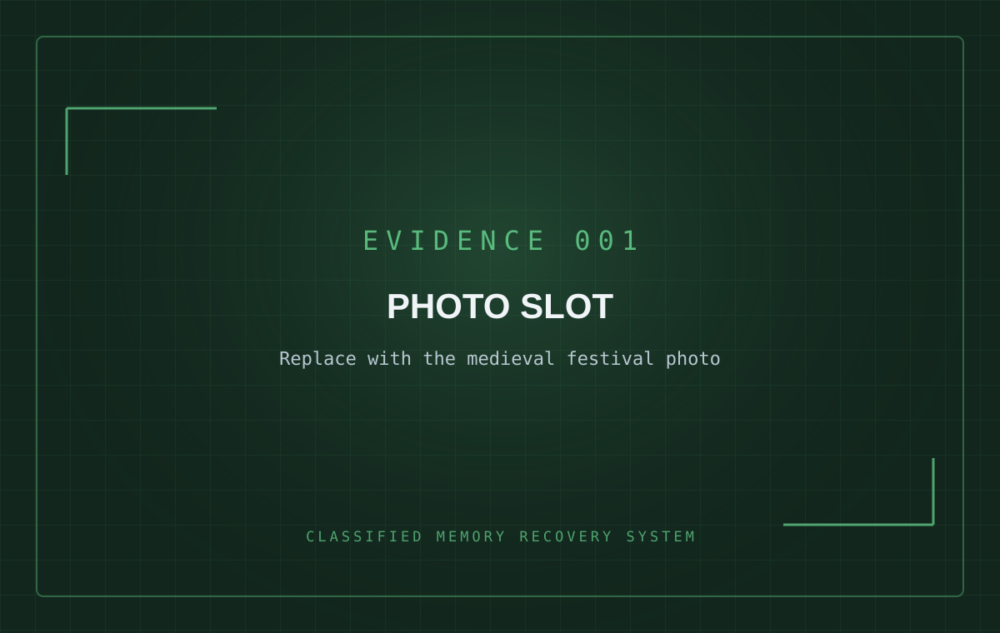

AZ
INCOMING CONNECTION · NODE 003
LOADING ARCHIVE
Establishing secure connection...
WAITING FOR OPERATOR
El audio comienza después de esta interacción, por compatibilidad con el navegador.
AUTHENTICATION REQUIRED LIVE
ACCESS DENIED
MEMORY FOUND

RECOVERED IMAGEUNREDACTED
▣SECONDARY TRANSMISSION DETECTED
ALL RECORDS RECOVERED
THE STORY WAS NEVER LOST.
Algunos archivos guardan información. Otros guardan el comienzo de una historia.
ARCHIVE ZERO · END OF DIGITAL INVESTIGATION
♫ MEMORY SOUNDTRACK LOADED